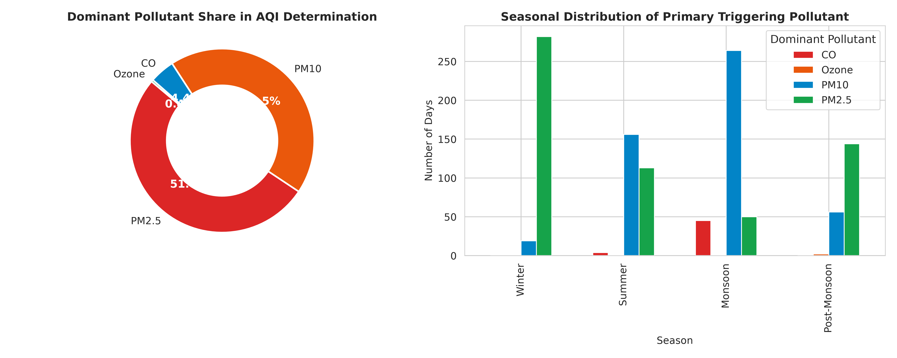

Which pollutant really controls Delhi's daily Air Quality Index?
The Short Answer
In the 1,137 official monitoring days evaluated at Delhi Alipur, particulate matter determined the headline National AQI on 95.3% of days. Fine particulate matter (PM2.5) alone governed 51.8% of days, while coarse particulate matter (PM10) governed 43.4%.
The Evidence

What the Data Shows, in Plain Terms
Because India's National Air Quality Index applies a maximum-subindex rule rather than a composite average, the single pollutant with the highest concentration relative to its standard dictates the final score. Particulate matter overwhelmingly dictates this score: PM2.5 or PM10 was the primary driver on 1,083 out of 1,137 official days (PM2.5 on 589 days; PM10 on 494 days).
Gaseous criteria pollutants almost never dictate the headline score: carbon monoxide was dominant on 50 days (4.4%) and ozone on 4 days (0.4%), while NO2 and SO2 never determined the headline score. During peak haze (November to January), daily PM2.5 averaged 197.5 µg/m³, running 5.75 times higher than the core monsoon baseline of 34.3 µg/m³ (standard winter Dec-Feb averaged 166.6 µg/m³, or 4.25 times monsoon levels). During peak haze, 98.8% of days exceeded the statutory 24-hour limit of 60 µg/m³.
What the Data Cannot Show
Alipur is a single monitoring station located on Delhi's northern periphery along National Highway 44. Its pollutant balance is influenced by heavy interstate diesel freight transit and regional agricultural burning plumes entering the National Capital Region. It cannot represent the micro-environments of dense residential colonies, central commercial districts, or southern ridge areas without multi-station spatial aggregation across Delhi's broader network.
Why It Matters
Public discussions frequently describe air pollution as an undifferentiated chemical smog. However, regulatory score compliance in northern Delhi is almost exclusively an aerosol problem. Policy interventions aimed at gaseous emissions will fail to move the headline winter AQI needle unless primary combustion soot and resuspended fugitive dust are directly suppressed at source.
Source, Code, and Technical Layer
Source: Central Pollution Control Board (CPCB) and Delhi Pollution Control Committee (DPCC) Site 204.
Observation Period: 2017 to 2023 (1,825 total records; 1,137 official CPCB valid days).
Open Pipeline Code: github.com/avnish36singh-arch/delhi-air_qaulity_cpcb
Verification Ledger: numbers_ledger.csv